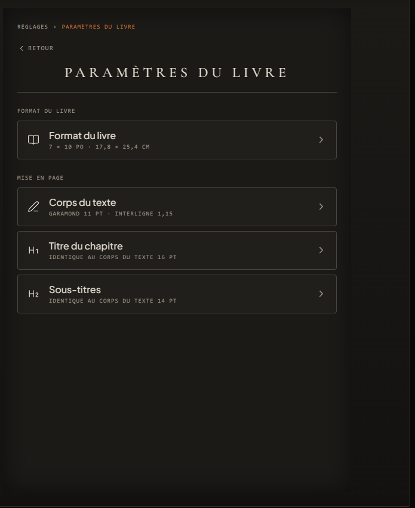
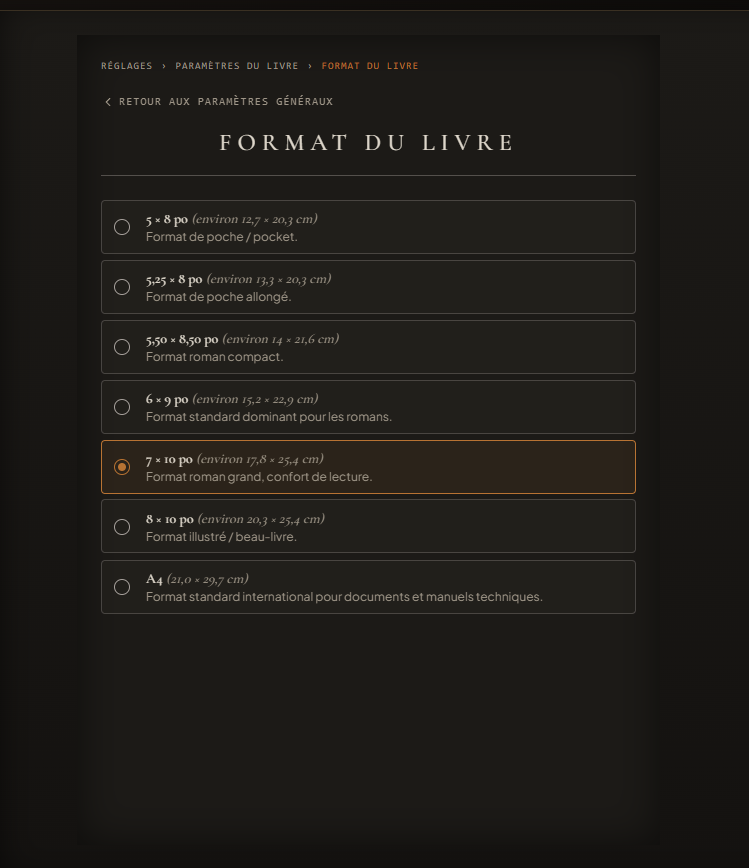

Banc I
Le Banc de Calibrage & Gabarits
Les fondations géométriques & l'harmonie typographique du volume
- Proportions & formats de coupe : Choix immédiat du gabarit parmi les formats canoniques de l'édition (du format poche 5×8 po au grand in-octavo 7×10 po pour un confort de lecture supérieur).
- Corps d'atelier & hiérarchie : Sélection du caractère d'imprimerie (Garamond), étalonnage du corps (11 pt), de l'interlignage (1,15) et des hauteurs optiques de titrage.
- Attache des sources : Déclaration fluide des répertoires du manuscrit (chapitres Markdown) et du dossier des ornements et illustrations.
- Rigueur du correcteur : Paramétrage des seuils de vigilance et de l'analyse orthotypographique.


Paramètres du livre & mise en page — format 7×10 po · Garamond 11 pt · interligne 1,15